ダイクストラ法
解説/アルゴリズム

辺に重み（コスト）が付いているグラフのことを重み付きグラフと呼び、上記画像のような形となります。
重みはノード間の移動距離や時間を表しており、上記画像の ABCD の各ノードは駅名、辺の数字は駅間の移動時間だと考えてみましょう。
たとえば A 駅から D 駅までを最短の時間で移動したい場合、A 駅から D 駅へと直接移動すると 20 分かかりますが、A 駅->B 駅->C 駅->D 駅と移動すると 18 分で済みます。
このように重み付きグラフの場合、移動ノードが短かければ最短経路になるとは限りません。
これから説明するダイクストラ法は重み付きグラフにおいて最短経路を求めるアルゴリズムとなります。
ただし辺の重みに負数が含まれる場合はダイクストラ法を利用することはできません。
解説用に新たに重み付きグラフを用意しました。
A からスタートをしようと思います。
A からスタートをしているので、当然ながら A までの最短距離は 0 になります。
画像ではわかりやすいように、確定したノードの付近にそのノードまでの最短距離を書き、ノードの色を赤で変更しています。
- 確定ノード: [A]
- A までの最短距離: 0 / ルート: [A] (確定)
最短経路が確定した A に繋がっているノードに A からの距離を書き加えておきます。
（A-B / A-F / A-E 間の距離を、各ノードに保持しておきます。）
A に繋がっているこれらのノードは次に最短経路が確定するかもしれない未確定ノードです。
画像ではわかりやすいように、未確定ノードの色とルートを青色に変更しています。
- 未確定ノード: [B, F, E]
- 確定ノード: [A]
- A までの最短距離: 0 / ルート: [A] (確定)
- B までの最短距離: 9 / ルート: [A-B] (未確定)
- F までの最短距離: 4 / ルート: [A-F] (未確定)
- E までの最短距離: 3 / ルート: [A-E] (未確定)
開始地点から一番短い経路で繋がっている未確定ノードを探します。
A-B / A-F / A-E の中では、A-E 間の距離が一番短いので、E まで移動するには、A-E 間が最短であることが確定します。
何故かというと最短経路が確定している A に繋がっているノードの中で、一番短い経路が A-E なので、他の経路、たとえば A-F や A-B から E の方に周りこんだルートが A-E より小さくなることはありえないからです。
- 未確定ノード: [B, F]
- 確定ノード: [A, E]
- A までの最短距離: 0 [A] (確定)
- B までの最短距離: 9 [A-B] (未確定)
- F までの最短距離: 4 [A-F] (未確定)
- E までの最短距離: 3 [A-E] (確定)
最短経路が確定した E に繋がっているノードである D と F に注目します。
D は新しく繋がった未確定ノードです。
それに加え、E には 3 という開始地点からの距離が保持されていますが、それに E-D 間の距離を足した 8 を D に書き込んでおきます。
つまり、まだ未確定ですが、開始地点からの最短距離を暫定的にノードに書き込んでおくわけです。
F はすでに候補になっているノードなので、開始地点から F までの暫定的な最短距離 4 が書き込まれています。
それがさらに短くできるならば更新を行います。
A-E-F の距離は 5 ですが、もともと存在していた A-F の経路の方が短いので、F までの暫定的な最短距離の情報は更新をしません。
今のところ、未確定ですが F までの最短経路は A-F のままとなります。
- 未確定ノード: [B, D, F]
- 確定ノード: [A, E]
- A までの最短距離: 0 [A] (確定)
- B までの最短距離: 9 [A-B] (未確定)
- D までの最短距離: 8 [A-E-D] (未確定)
- F までの最短距離: 4 [A-F] (未確定)
- E までの最短距離: 3 [A-E] (確定)
開始地点から一番短い経路で繋がっている未確定ノードを探します。
A-B / A-F / A-E-D の中では、A-F 間の距離が一番短いので、F まで移動するには、A-F 間が最短であることが確定します。
- 未確定ノード: [B, D]
- 確定ノード: [A, E, F]
- A までの最短距離: 0 [A] (確定)
- B までの最短距離: 9 [A-B] (未確定)
- D までの最短距離: 8 [A-E-D] (未確定)
- F までの最短距離: 4 [A-F] (確定)
- E までの最短距離: 3 [A-E] (確定)
最短経路が確定した F に繋がっているノードである B と D に注目します。
B と D に書き込まれている最短距離より、A-F から通る距離の方が短ければ、情報を更新します。
B の場合、A-B の距離 9 より A-F-B の距離 7 の方が短いので、B ノードまでの最短経路が 7 に更新されます。
D の場合、A-E-D の距離 8 より A-F-D の距離 9 の方が長いので、D ノードまでの最短経路は 8 のままになります。
- 未確定ノード: [B, D]
- 確定ノード: [A, E, F]
- A までの最短距離: 0 [A] (確定)
- B までの最短距離: 7 [A-F-B] (未確定)
- D までの最短距離: 8 [A-E-D] (未確定)
- F までの最短距離: 4 [A-F] (確定)
- E までの最短距離: 3 [A-E] (確定)
開始地点から一番短い経路で繋がっている未確定ノードを探します。
A-B / A-E-D の中では、A-B 間の距離が一番短いので、B まで移動するには、A-B 間が最短であることが確定します。
- 未確定ノード: [D]
- 確定ノード: [A, B, E, F]
- A までの最短距離: 0 [A] (確定)
- B までの最短距離: 7 [A-F-B] (確定)
- D までの最短距離: 8 [A-E-D] (未確定)
- F までの最短距離: 4 [A-F] (確定)
- E までの最短距離: 3 [A-E] (確定)
 最短経路が確定した B に繋がっているノードである C に注目します。
最短経路が確定した B に繋がっているノードである C に注目します。
C は新しく繋がった未確定ノードです。
B までの最短距離 7 に B-C 間の距離を足した 11 を C に書き込んでおきます。
- 未確定ノード: [C, D]
- 確定ノード: [A, B, E, F]
- A までの最短距離: 0 [A] (確定)
- B までの最短距離: 7 [A-F-B] (確定)
- C までの最短距離: 11 [A-F-B-C] (未確定)
- D までの最短距離: 8 [A-E-D] (未確定)
- F までの最短距離: 4 [A-F] (確定)
- E までの最短距離: 3 [A-E] (確定)
開始地点から一番短い経路で繋がっている未確定ノードを探します。
A-F-B-C / A-E-D の中では、A-E-D 間の距離が一番短いので、D まで移動するには、A-E-D 間が最短であることが確定します。
- 未確定ノード: [C]
- 確定ノード: [A, B, D, E, F]
- A までの最短距離: 0 [A] (確定)
- B までの最短距離: 7 [A-F-B] (確定)
- C までの最短距離: 11 [A-F-B-C] (未確定)
- D までの最短距離: 8 [A-E-D] (確定)
- F までの最短距離: 4 [A-F] (確定)
- E までの最短距離: 3 [A-E] (確定)
最短経路が確定した D に繋がっているノードである C に注目します。
C に書き込まれている最短距離より、A-E-D から通る距離の方が短ければ、情報を更新します。
C の場合、A-F-B-C の距離 11 より A-E-D-C の距離 10 の方が短いので、C ノードまでの最短経路が 10 に更新されます。
- 未確定ノード: [C]
- 確定ノード: [A, B, D, E, F]
- A までの最短距離: 0 [A] (確定)
- B までの最短距離: 7 [A-F-B] (確定)
- C までの最短距離: 10 [A-E-D-C] (未確定)
- D までの最短距離: 8 [A-E-D] (確定)
- F までの最短距離: 4 [A-F] (確定)
- E までの最短距離: 3 [A-E] (確定)
開始地点から一番短い経路で繋がっている未確定ノードを探します。
未確定ノードは C しか残っていないので、C まで移動するには、A-E-D-C 間が最短であることが確定します。
- 未確定ノード: []
- 確定ノード: [A, B, C, D, E, F]
- A までの最短距離: 0 [A] (確定)
- B までの最短距離: 7 [A-F-B] (確定)
- C までの最短距離: 10 [A-E-D-C] (確定)
- D までの最短距離: 8 [A-E-D] (確定)
- F までの最短距離: 4 [A-F] (確定)
- E までの最短距離: 3 [A-E] (確定)
コード例
#include <bits/stdc++.h>
using namespace std;
using ll = long long;
using P = pair<ll, ll>;
struct Edge {
int to;
ll cost;
};
int main() {
int n = 4; // 頂点数
int s = 0; // 始点
vector<vector<Edge>> edge(n);
// 辺の登録。例えば一番上は頂点0から頂点1まで移動するのにコストが1かかることを表している
edge[0].push_back({1, 1});
edge[0].push_back({2, 4});
edge[1].push_back({2, 2});
edge[2].push_back({3, 1});
edge[1].push_back({3, 5});
// 始点から各頂点までの移動総コスト
// 始点は0、それ以外の頂点は入ることがあり得ない大きい値にしておく
int INF = 1000000000;
vector<int> dist(n, INF);
dist[s] = 0;
// 未確定の頂点の中から始点からの移動総コストが最小のものを高速に取り出すため、
// 優先度付きキューを利用する
// pair{頂点までの暫定コスト, 頂点}
priority_queue<P, vector<P>, greater<P>> pq;
// 始点と始点までのコスト0を入れておく
pq.push({0, s});
// 優先度付きキューが空になるまでループ
while (!pq.empty()) {
// 未確定の頂点の中から始点からの移動総コストが最小のものを取り出す
// この時点で、始点から取り出した頂点までの最短コストが確定する
P p = pq.top();
pq.pop();
// 具体的な名前に変更
ll cost = p.first;
int cur = p.second;
// 既にcostより小さい値で確定されているのでスキップ
if (dist[cur] < cost) {
continue;
}
// 頂点に繋がっている各頂点を走査
for (auto e : edge[cur]) {
// 計算したコストが暫定コストより小さければ更新。
// 次の頂点を優先度付きキューに追加する
ll new_cost = dist[cur] + e.cost;
if (new_cost < dist[e.to]) {
dist[e.to] = new_cost;
pq.push({new_cost, e.to});
}
}
}
for (auto x : dist) {
cout << x << endl;
}
}
キューの仕様上、同じ頂点を追加した際、別々なものとして扱うので、確定した頂点なのにまたキューからその頂点が出てくるということがあります。
その場合、無駄な走査を行わないように、if (dist[cur] < cost)ならスキップを行うという処理を入れるのがポイントです。
計算量
優先度付きキュー（ヒープ）を用いる場合、計算量は になります。